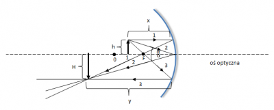
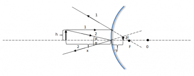

Zastosowanie zwierciadeł sferycznych wklęsłych i wypukłych
Zwierciadła Sferyczne Wklęsłe
Teoria
Zwierciadło sferyczne wklęsłe to zwierciadło,
którego powierzchnią odbijającą promienie świetlne
jest wewnętrzna powierzchnia kuli, czyli sfera.
W celu utworzenia konstrukcji obrazu powstającego
w tego typu zwierciadle, należy zdefiniować jego
oś optyczną oraz ognisko (F).
Oś optyczna jest to prosta, która przechodzi
przez środek zwierciadła i środek jego krzywizny (O) -
jest to więc prosta, stanowiąca środek symetrii
zwierciadła.
Ognisko jest natomiast punktem leżącym na osi
optycznej zwierciadła, przez który przechodzą
promienie odbite, które padają na zwierciadło
równolegle do osi optycznej. Odległość ogniska od
powierzchni odbijającej nazywana jest ogniskową i
jest oznaczana literą f. W przypadku promieni
biegnących blisko osi optycznej, czyli padających
na zwierciadło pod kątem zbliżonym do wartości 0°
(licząc od prostej normalnej), spełniony jest warunek: , gdzie R – promień krzywizny zwierciadła.

Praktyka
Zastosowania w
- Latarkach
- Wstecznych lusterkach w samochodzie
- Lampach i reflektorach
Zwierciadła Sferyczne Wypukłe
Zwierciadło sferyczne wypukłe to zwierciadło,
którego powierzchnią odbijającą promienie
świetlne jest zewnętrzna powierzchnia kuli, czyli
sfera. W celu utworzenia konstrukcji obrazu
powstającego w tego typu zwierciadle, należy
zdefiniować jego oś optyczną oraz ognisko (F).
Oś optyczna, podobnie jak w przypadku zwierciadła
wklęsłego, jest prostą, która przechodzi przez
środek zwierciadła i środek jego krzywizny (O).
Ognisko jest natomiast punktem, który w
przypadku zwierciadła wklęsłego znajduje się po
przeciwnej stronie powierzchni odbijającej niż
przedmiot – jest to tzw. ognisko pozorne.
Ogniskowa, czyli odległość ogniska od zwierciadła
jest więc w tym przypadku zawsze ujemna.
Zwierciadła wypukłe dają zawsze obrazy pozorne,
pomniejszone i proste.

Na rysunku przedstawiono konstrukcję obrazu, powstającego
w zwierciadle wypukłym. Do jego budowy wykorzystano dwa
promienie świetlne, wychodzące z jednego końca przedmiotu.
Promień pierwszy, który biegnie równolegle do osi optycznej,
po odbiciu od zwierciadła zostaje rozproszony tak, że jego
przedłużenie przechodzi przez ognisko pozorne.
Promień drugi, który pada na środek zwierciadła pod kątemα,
zgodnie z prawem odbicia światła, odbija się pod tym samym kątem.
W miejscu przecięcia się przedłużeń promieni świetlnych za
zwierciadłem powstaje obraz przedmiotu.
W przypadku zwierciadeł wypukłych spełnione są takie same
zależności jak w przypadku zwierciadeł wklęsłych.
Zastosowania w
- Teleskopach astronomicznych
- Powiekszających lusterkach kosmetycznych
- Lupach
- Lampach i reflektorach